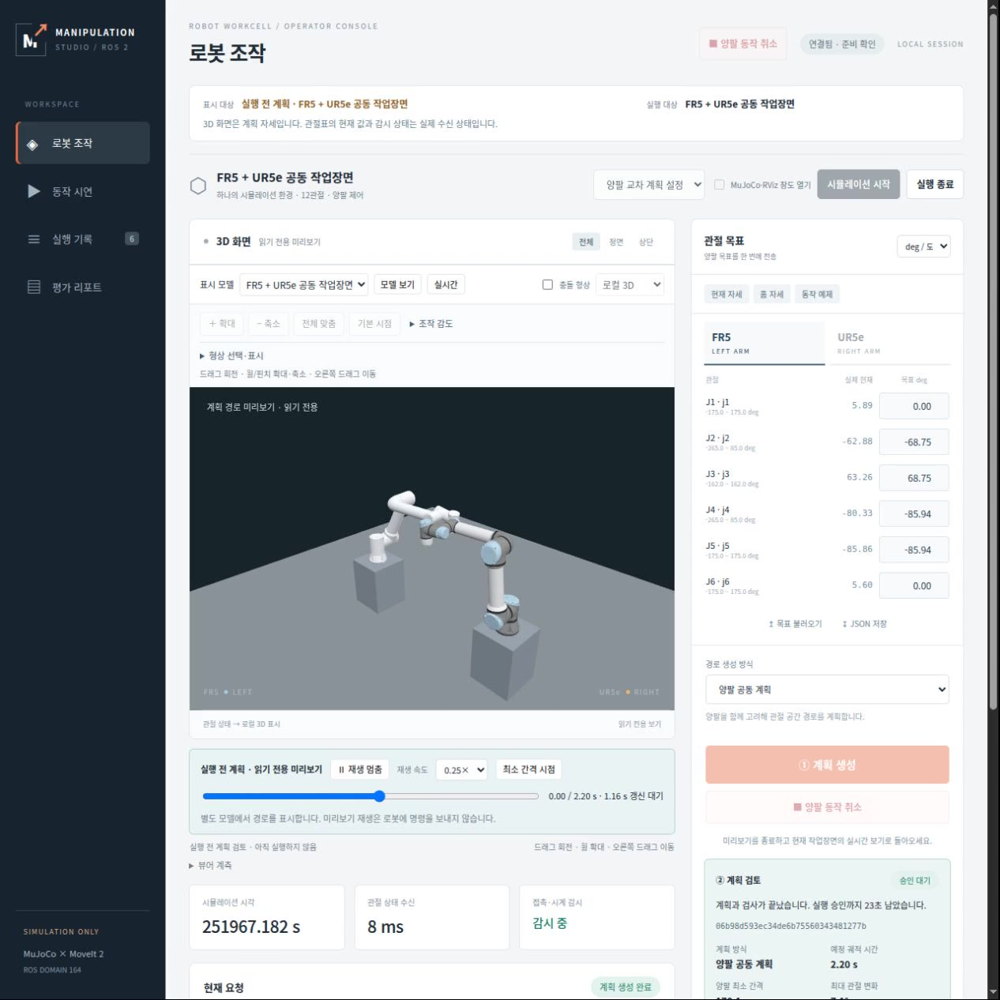
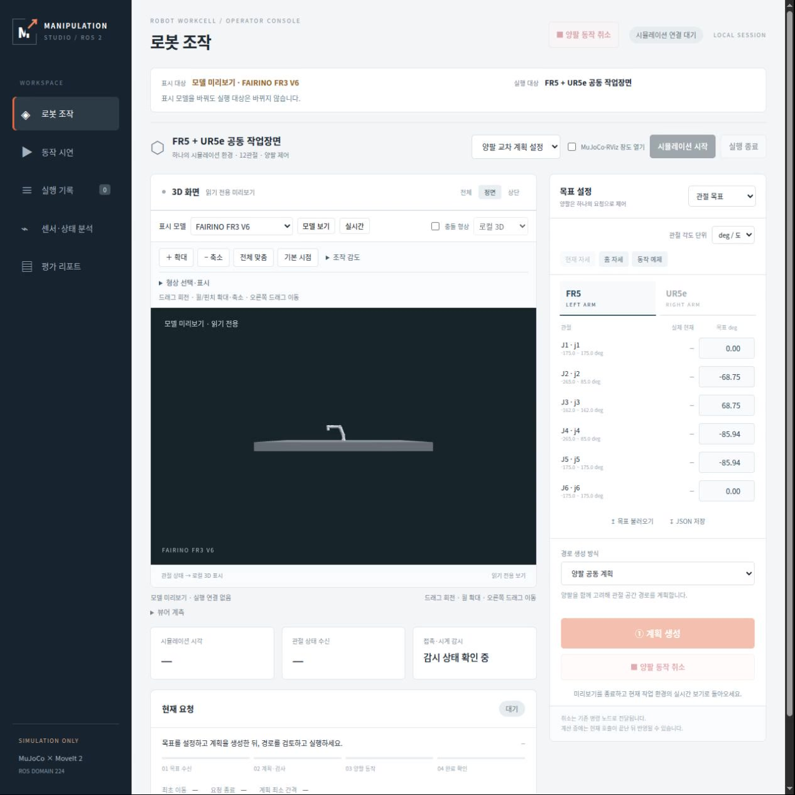
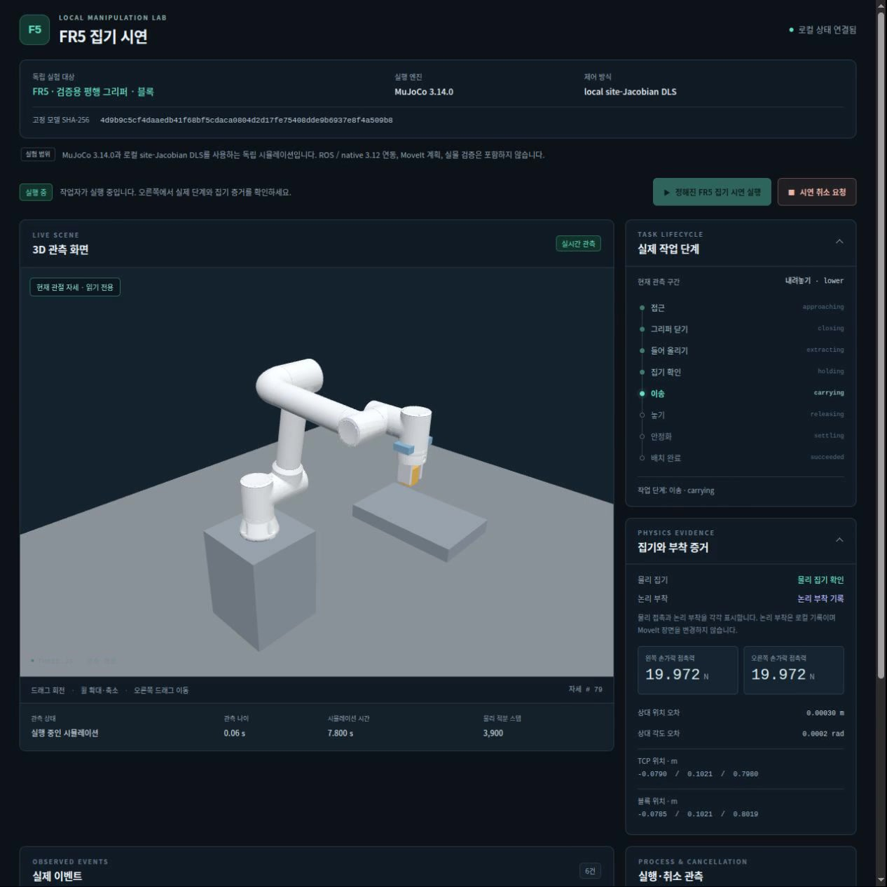
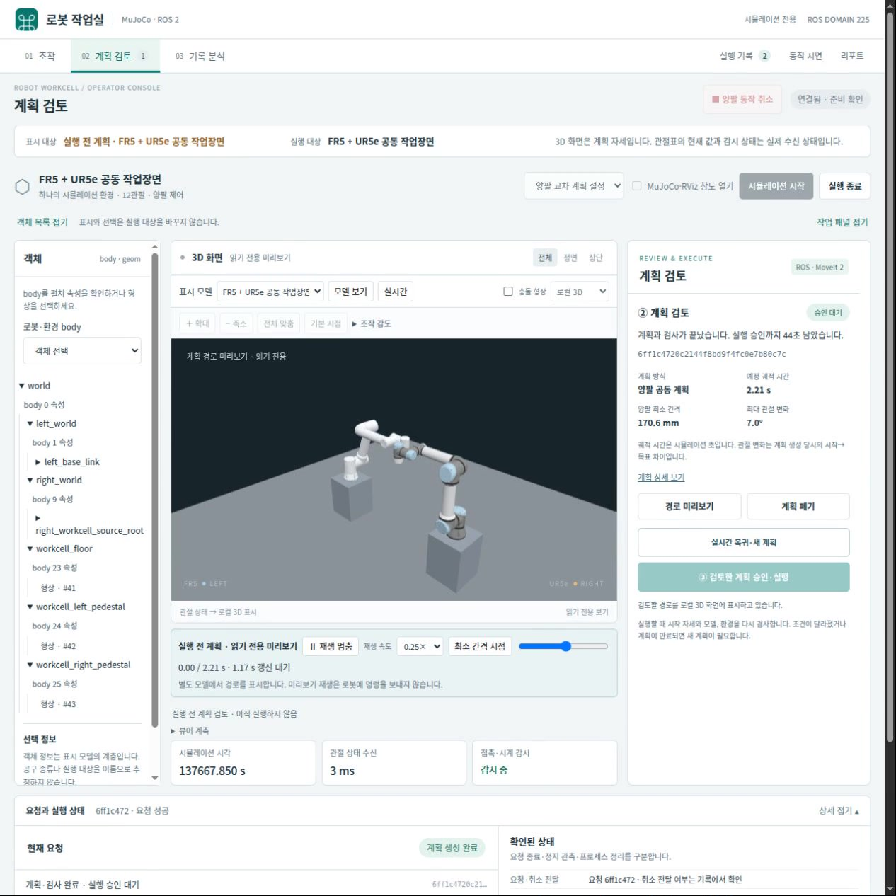
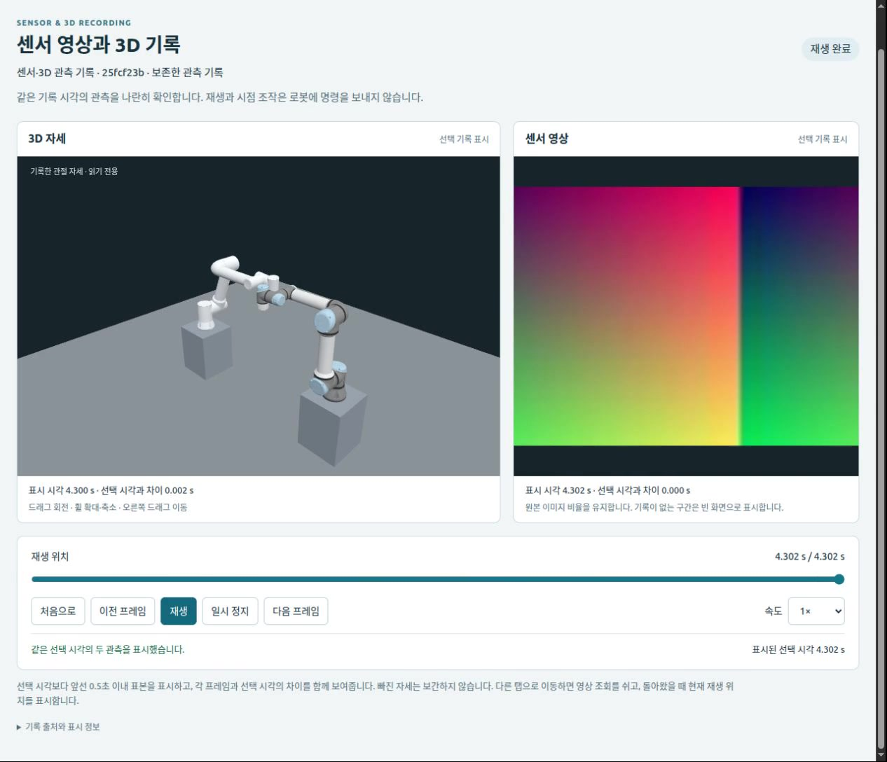
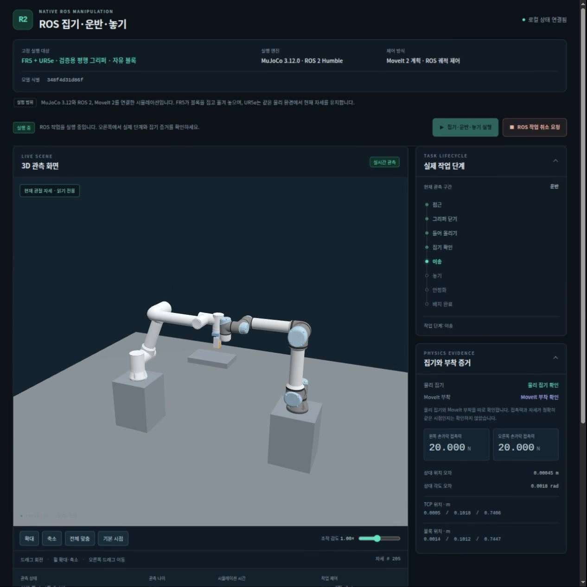

8897 · 홈 경로 미리보기
기존 통합 화면에서 홈 목표의 계획을 만들고 0.25배속으로 미리 봅니다. 실행 승인은 하지 않아 실제 ROS 목표를 보내지 않았습니다. 촬영 후에는 계획을 폐기하고 실시간 표시로 돌아왔습니다.

Viewer operations · 2026-10-30
현재 운영 중인 여섯 화면의 역할과 동작을 비교합니다.
전용 집기 화면과 기존 통합 뷰어의 연결 상태를 구분하고, 다음 통합 순서를 정리합니다.
통합 조작, 독립 집기 실험, 기록 재생, ROS 집기 전용 화면이 각각 운영되고 있습니다.
현재 화면을 기능과 운영 목적에 따라 정리한 상태 리포트입니다. 포트 번호는 개발 버전이 아니며, 아래 상태는 조사 시점의 기록입니다. 같은 포트의 서버나 코드가 바뀌면 이 목록도 갱신해야 합니다.
현재 연결 상태: 8930의 집기·운반·놓기는 별도 화면과 ROS 환경에서 실행합니다. 기존 통합 화면 8897·8923·8925에는 집기 뷰어 링크도 등록되지 않았습니다. 최신 코드에는 별도 집기 화면을 새 탭으로 여는 링크가 있지만, 같은 3D 화면에서 작업 선택·실행·상태·취소를 공유하는 기능은 아직 구현하지 않았습니다.
Three.js 표시부는 유지하고, 표시 모델·실행 대상·작업 상태를 구분하는 기존 방향을 따릅니다. 여러 서버를 단순히 한 포트로 모으기 전에 작업별 명령과 취소의 소유권을 먼저 정리합니다.
호스트의 TCP 수신 포트와 각 서버의 읽기 전용 설정·상태 응답을 확인했습니다. 아래 주소는 촬영 호스트의 로컬 주소이며, 공개 사이트 방문자에게 서버 접속을 제공하는 주소는 아닙니다.
| 화면·포트 | 주요 기능 | 실행 환경 | 11:25 조사 상태 | 동작 영상 |
|---|---|---|---|---|
이전 통합 뷰어 8897http://127.0.0.1:8897/ | 양팔 관절 목표, 계획 검토·승인·실행·취소, 접촉·타이밍 비교 | ROS 도메인 164 | 웹·물리 시뮬레이션 실행 중, 진행 중 요청 없음 | 영상 1 |
개발 검증용 통합 뷰어 8923http://127.0.0.1:8923/ | 관절·TCP Pose 목표, 계획 검토·실행, 비교 시연 | ROS 도메인 224 | 웹 대기, 물리 시뮬레이션 정지 | 영상 2 |
독립 집기 실험 8924http://127.0.0.1:8924/ | 검증용 그리퍼·블록의 접근·집기·운반·놓기 | Python MuJoCo 3.14 · 로컬 DLS ROS·MoveIt 미사용 | 웹 대기, 최근 작업 완료·실행 작업자 없음 | 영상 3 |
새 작업실 GUI 8925http://127.0.0.1:8925/ | 객체 목록·3D·작업 패널, 관절·TCP 목표, 계획 검토·기록 분석 | ROS 도메인 225 | 웹·물리 시뮬레이션 실행 중, 진행 중 요청 없음 | 영상 4 |
동기 기록 재생 8929http://127.0.0.1:8929/ | 센서 이미지와 3D 자세를 같은 기록 시각으로 탐색·재생 | 읽기 전용 · ROS 미사용 | 재생 서버 실행 중, 로봇 명령 전송 없음 | 영상 5 |
ROS 집기 전용 8930http://127.0.0.1:8930/ | FR5 집기·운반·놓기·취소, 물리 집기·MoveIt 부착·정리 상태 | native MuJoCo 3.12 · ROS 도메인 222 | 웹 대기, 최근 작업 완료·실행 작업자 없음 | 영상 6 |
8897과 8925는 조사 시점에 물리 시뮬레이션도 실행 중이었습니다. 8923·8924·8930의 웹 서버 대기를 로봇 동작 중으로 해석하지 않습니다. 조사 원본에서 호스트 경로·프로세스 식별자·인증 정보를 제외한 공개 운영 목록을 제공합니다.
각 영상은 해당 화면의 표시와 조작 흐름을 보여주는 기능 기록입니다. 8897·8925는 명령을 보내지 않는 계획 미리보기, 8923은 정지 상태의 화면 조작, 8924·8930은 새 물리 시뮬레이션 실행, 8929는 합성 검증 기록의 재생입니다. 브라우저 화면을 간격을 두고 수집해 영상으로 구성했으며 반복 프레임이 포함됩니다. 영상 길이나 인코딩 속도를 뷰어 FPS·로봇 속도의 비교값으로 사용하지 않습니다. 촬영 방법과 구분은 촬영 근거에서 확인합니다.
기존 통합 화면에서 홈 목표의 계획을 만들고 0.25배속으로 미리 봅니다. 실행 승인은 하지 않아 실제 ROS 목표를 보내지 않았습니다. 촬영 후에는 계획을 폐기하고 실시간 표시로 돌아왔습니다.

물리 시뮬레이션을 시작하지 않고 FR3 모델을 선택해 상단·정면 시점으로 전환합니다. TCP 목표 입력 패널도 확인합니다. 화면 조작 영상이며 로봇 경로의 실행 기록은 아닙니다.

Python MuJoCo 3.14와 로컬 DLS로 고정 집기 작업을 새로 실행한 화면입니다. 그리퍼와 블록의 물리 동작을 표시하며, ROS Action이나 MoveIt 부착 상태는 사용하지 않습니다.

새 작업실 GUI에서 동작 예제 목표의 계획을 만들고 0.25배속으로 미리 봅니다. 객체 목록과 3D 화면을 유지한 채 계획을 확인하며, 실행 승인은 하지 않았습니다. 촬영 후에는 계획을 폐기하고 실시간 표시로 돌아왔습니다.

검증용 합성 RGB 진단 이미지 18장과 3D 자세 41개를 공통 기록 시각으로 재생하고, 이전·다음 프레임을 탐색합니다. 명령을 전송하지 않는 읽기 전용 동작입니다. 실제 카메라의 시간 동기화나 보정을 검증한 영상은 아닙니다.

native MuJoCo 3.12·ROS·MoveIt 경로에서 새 집기 작업을 실행한 화면입니다. FR5와 검증용 평행 그리퍼가 블록을 옮기며, 물리 집기와 MoveIt 장면의 부착을 구분해 표시합니다. 촬영한 작업은 배치 완료와 native 종료·소유 프로세스 정리까지 확인했습니다. 실제 ROS 관측을 사용하는 시뮬레이션이며 실물 로봇 영상은 아닙니다.

8924의 독립 실험과 8930의 ROS 집기는 서로 다른 실행 경로입니다. 한쪽의 성공 영상을 다른 쪽의 연동 검증으로 대신하지 않습니다. FR5·검증용 평행 그리퍼·블록의 대표 사례이며 임의 물체나 실물 집기 성능을 뜻하지 않습니다.
아래에서 두 화면을 선택해 차이를 확인할 수 있습니다. 비교 기능은 문서의 정적 표만 사용하며, 로컬 서버에 접속하거나 명령을 보내지 않습니다.
| 비교 항목 | 8925 | 8930 |
|---|
구현과 운영 설정을 대조한 정성 비교입니다. 지원 기능은 실제 촬영에서 실행한 동작의 수나 성능 순위를 뜻하지 않습니다. 모바일에서는 표를 가로로 이동할 수 있습니다. JavaScript를 사용하지 않아도 이 표 전체를 읽을 수 있습니다.
| 비교 항목 | 8897 · 이전 통합 | 8923 · 개발 검증 | 8924 · 독립 집기 | 8925 · 새 작업실 | 8929 · 동기 재생 | 8930 · ROS 집기 |
|---|---|---|---|---|---|---|
| 주된 사용 목적 | 양팔 목표·계획 조작 | 개발 기능 검증 | 독립 물리 집기 실험 | 객체·계획·기록 작업실 | 센서·3D 기록 분석 | ROS 물리 집기 실행 |
| 3D 시점 조작 | 회전·이동·줌 | 회전·이동·줌 | 회전·이동·줌 | 회전·이동·줌 | 회전·이동·줌 | 회전·이동·줌 |
| 관절·TCP 목표 입력 | 관절 목표 | 관절·TCP Pose 목표 | 고정 집기 순서 | 관절·TCP Pose 목표 | 입력·실행 없음 | 고정 집기 순서 |
| 일반 계획 검토·승인 | 지원 | 지원 | 해당 없음 | 지원 | 기록 탐색만 지원 | 고정 작업 내부 단계 |
| 접촉·타이밍 비교 시연 | 지원 | 지원 | 해당 없음 | 지원 | 명령 재실행 없음 | 해당 없음 |
| 집기·운반·놓기 | 일반 조작에 없음 | 일반 조작에 없음 | 독립 MuJoCo 실험 | 일반 조작에 없음 | 실행 없음 | native ROS·MoveIt 연결 |
| 객체 목록·작업 패널 | 기존 형상 선택 도구 | 기존 형상 선택 도구 | 집기 전용 패널 | body·geom 목록과 작업실 배치 | 재생 전용 패널 | 집기 전용 패널 |
| 센서·3D 공통 시간축 | 통합 동기 재생 없음 | 통합 동기 재생 없음 | 통합 동기 재생 없음 | 통합 동기 재생 없음 | 보존 이미지·자세 동기 재생 | 통합 동기 재생 없음 |
| ROS·MoveIt 실행 | 양팔 ROS 제어 | 양팔 ROS 제어 | 사용하지 않음 | 양팔 ROS 제어 | 사용하지 않음 | 팔·그리퍼·Planning Scene |
| 집기 화면 이동 링크 | 운영 설정에 미등록 | 운영 설정에 미등록 | 해당 없음 | 운영 설정에 미등록 | 해당 없음 | 별도 전용 화면 |
UI 연결과 실행 통합은 별개의 작업입니다. 최신 코드의 이동 링크를 등록해도 두 서버의 실행 상태나 취소 소유권이 합쳐지지는 않습니다. 현재 집기 모델을 일반 통합 화면의 실행 모델로 바로 지정하는 방식도 지원하지 않습니다.
표시 성능은 이 영상에서 새로 평가하지 않았습니다. 측정 조건과 기존 원본은 WebGL 뷰어 개선과 표시 성능에, 계획 방식의 대표 비교는 W08 플래너·캐시 비교에 유지합니다.
현재 검증한 실행 경로를 유지하면서 조작의 진입점과 상태 표시를 먼저 정리합니다. 아래 항목은 후속 계획이며 이 리포트의 게시로 구현 완료되지는 않습니다.
이 리포트의 역할: 현재 운영 현황과 후속 UI 통합의 기준을 남깁니다. 이미 확인한 ROS 집기·기록 재생의 구현 결과는 유지하고, 서로 다른 화면의 기능이나 검증 결과를 합산하지 않습니다.
확인일: 2026-10-30 · 공개 구현 기준: main 54d0557. 운영 중인 각 서버가 시작 시점의 전체 코드를 동일하게 적재했다는 주장은 하지 않습니다.